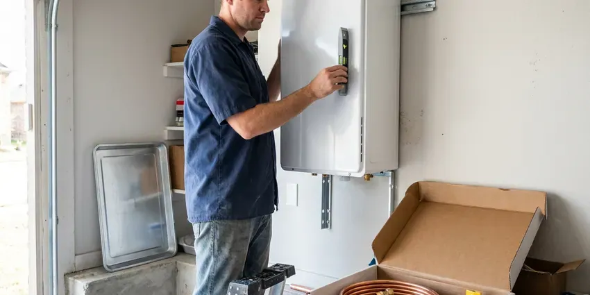

Well Pressure Tank Replacement in Exeter, NH
Well-X-Trol, Flex-Lite and other major brands installed. Pressure tank replacement in Exeter, NH.
- Same-Day Tank Swaps
- Pre-Charge Set to Cut-In
- Licensed & Insured
- Nearby Service

Replace That Waterlogged Tank in Exeter, NH.
New tank tee, gauge and relief valve come with every install.
Local Well Tank Replacement in Exeter, NH
FVR Plumbing replaces well pressure tanks, the steel tank that holds water under air pressure between the pump and your faucets. A rubber bladder inside keeps the air charge apart from the water. Once that bladder tears, the tank fills with water, the air cushion disappears, and the pump starts and stops every few seconds. Pumps hate that.
Work we handle every week:
- Multi-tank and large capacity systems
- Galvanized air-over-water tank conversions
- Cycle time and pump run testing

Additional Plumbing Replacement Services in Exeter, NH
When repairs are no longer enough, our replacement services in Exeter, NH deliver modern, efficient equipment installed right.



Tankless Water Heater Replacement in Exeter


Customers
Why Choose FVR Plumbing for Well Pressure Tank Replacement in Exeter, NH?
We know well water systems carry a whole house in New Hampshire, which makes a dead tank a real problem. No tank means no pressure. Common sizes ride on our trucks for same-day swaps.
- System Tuned, Pre-charge, switch settings and cycle time all get checked before we leave.
- Correct Sizing, We size by gallons per minute and drawdown, not by matching the old tank.
- Clear Pricing, The price is set before any work begins. No hourly surprises.
Citywide Coverage
Basement, crawlspace, well house or garage, we reach tanks wherever they sit. Our crews cover Exeter and the surrounding area most days of the week, bringing common tank sizes on the truck. Tight spaces are fine.
Experienced Team
Every plumber here can set pre-charge, seal threaded fittings properly, and adjust a pressure switch the right way with a calibrated gauge. Setup mistakes shorten tank life. We test every system through several cycles before leaving.
Safety-First Approach
We protect the house during the work. Floors get covered. The drain hose runs outside or to a floor drain, so the system's water does not end up on your basement floor. We clean as we go.
Trusted Certified Exeter Plumbing Services Professionals
At FVR Plumbing, we are proud to offer certified plumbing services throughout Exeter, NH. Credentials matter in this trade. Our plumbers hold recognized industry credentials, and they follow strict safety and quality rules on every repair, installation and maintenance call we run.
Call Us Now PHCC Plumbing Contractor Recognition
PHCC Plumbing Contractor Recognition Better Business Bureau (BBB) Accreditation
Better Business Bureau (BBB) Accreditation Angi Certified Pro
Angi Certified Pro ISO 9001 Quality Management Certification
ISO 9001 Quality Management CertificationWhat Goes Into a Well Tank Swap in Exeter, NH
Large Capacity Tanks for Ranch and Commercial Wells in Exeter
Big properties need big drawdown. Livestock and irrigation draw a lot. We install large capacity tanks or banks of tanks on a manifold, so heavy-use systems still keep the pump from short cycling. Floor space matters.

Residential Well Pressure Tank Replacement in Exeter
Most homes on a well have a tank between 20 and 86 gallons sitting near the pressure switch. We shut off power to the pump first. Then we drain the system, unthread the old tank from the tank tee, set the pre-charge on the new one, and connect it with new fittings and fresh sealant. Usually a morning.
Well-Rite Pressure Tank Installation in Exeter, NH
Well-Rite tanks use a replaceable diaphragm design in many models. Common sizes are easy for us to get. Like any tank, the key is setting pre-charge before it fills, and checking that drawdown matches the pump. A good tank installed badly fails early.
Pressure Switch and Gauge Integration in Exeter, NH
The pressure switch tells the pump when to start and stop. Switch and tank are a team. A switch set at 40/60 needs a tank pre-charged to 38 psi, and a gauge that reads correctly so you can see what the system is doing, so we replace a worn gauge rather than trusting a sticky needle. Small parts, big role.
Pressure Tank Sizing and Upsizing in Exeter
Drawdown is the usable water between cut-out and cut-in. A 20-gallon tank might give you five or six gallons. We divide pump flow by drawdown to see how many starts per hour the pump will face, aiming for at least one minute of run time per cycle. That often points to a bigger tank.
Bladder-Style Pressure Tank Replacement in Exeter, NH
A bladder tank holds water inside a rubber balloon surrounded by compressed air. Air pressure forces water to the fixtures. Bladders crack with age, especially if the tank ran with low pre-charge, which waterlogs the tank. Replacement is the fix.
Galvanized Steel Pressure Tank Upgrades in Exeter
Old galvanized tanks have no bladder at all. Water sits right against an air pocket. Over time the water absorbs the air, the tank waterlogs, which means draining it to restore the air. A sealed bladder tank ends that chore.

Pressure Switch Replacement in Exeter, NH
Switch contacts pit and burn over time. A pitted switch can stick on or chatter. When we swap a tank we look at the contacts and the sensing port underneath, and we usually recommend replacing a switch older than the tank it served. Cheap part.
Well Tank Replacement Near Exeter, NH
Local plumbers know local wells. Depths vary a lot. That affects pump size, switch settings and the tank you need, and it is the kind of thing we have seen many times around Exeter, NH, so we narrow it down quickly. Every system still gets tested.
Need a pressure tank replaced near you? Let us know how big the tank is and how often the pump cycles. That helps us load the right parts, so the job in Exeter rarely needs a second trip, and most swaps take a few hours start to finish.
FVR Plumbing at a Glance
- Licensed and insured plumbers serving Exeter, NH
- 24/7 emergency service with same-day scheduling
- Upfront, flat-rate pricing before work begins
- 4.9-star rated by 840+ New Hampshire customers
Exeter Map
Exeter Information
- Population
- 10,109
- Area codes
- Local
- Service area
- Exeter and communities within 40 miles
- Nearby
- Portsmouth, Durham, Dover, Derry
A waterlogged pressure tank makes the well pump start and stop every few seconds, and that wears out a pump fast.
Expert Services
Reach out to FVR Plumbing for reliable plumbing work done by licensed pros in Exeter, NH.
Our Specialized Plumbing Services in Exeter, NH
At FVR Plumbing, we handle the full list of plumbing services across Exeter, NH. We go from leak detection all the way to full system installations, for homes and commercial buildings, and we do it quickly at a fair price. Here are the core services we offer:


How Pressure Tank Replacement Works in Exeter, NH
Here is what to expect when we replace your well pressure tank.
Call Us
Call (844) 442-1569 and describe the pressure problem. We quote a price range.
Test and Confirm
We test the tank, switch and gauge. Then we confirm what needs replacing.
Replace and Adjust
We install the new tank, set pre-charge and adjust the switch. A cycle test finishes it.
Frequently Asked Questions About Well Pressure Tank Replacement in Exeter
Typical replacements run $800 to $2,000. The tank size and setup decide the price. A simple swap on a standard tank sits at the low end, while a larger tank, a new switch or extra plumbing work moves it up. You get a written price first.
A bladder tank holds water in a rubber bag. A diaphragm tank uses a flexible sheet instead. Both keep air and water apart so the tank does not waterlog, and both fail in similar ways when the rubber tears or wears out. Either works well.
A written labor warranty on our work. Manufacturers warranty the tank itself. If a fitting we install leaks or the setup is wrong, that fix is on us, and the details are on your estimate.
Pump flow decides it. Bigger pumps need more drawdown. We divide gallons per minute by drawdown to see how often the pump will start, so the pump runs long enough each time. Often bigger than the old one.
Possibly, with care. Power, pressure and pre-charge all matter.
Most last 10 to 15 years. Life depends on pre-charge, water quality and how often the pump cycles, and a tank that ran with low air pressure for years usually fails sooner than one that was checked every year. Bigger tanks tend to last longer.
The pump clicking on and off every few seconds is the classic one. So is water pressure that swings up and down. Water spitting from the air valve on top, a rusty or leaking tank bottom, or a tank that sounds full when you knock near the top, all point to a failed tank. Test it first.
It depends on where you live. Some areas need no permit for a simple swap. Others require a plumbing permit, especially if electrical work or a new switch is involved, so we confirm with the building department first. We handle it either way.
Hear From Customers Who Hired Our Plumbing Experts

Nathan E.
Our tankless heater kept throwing an error code and shutting off mid shower. The tech flushed the heat exchanger, which was full of scale, and replaced a bad flow sensor. Hot water has been steady for half a year now.
Water Heater Repair · Somersworth, NHCarlos V.
Our house still had galvanized pipe, and upstairs the shower was a trickle. The crew repiped everything in PEX over three days and patched every drywall hole before they left. The pressure difference is night and day.
Repiping · Rochester, NHTyler J.
We bought a taller comfort height toilet for my dad, who just had knee surgery. The plumber pulled the old one, found the flange was cracked, and replaced it before setting the new bowl. Took about two hours.
Toilet Installation · Rochester, NH
Marcus H.
Grease from the fryer line kept clogging the kitchen drain at my diner. FVR Plumbing hydro jetted the line after closing, showed me the buildup on camera, and set us up on a quarterly cleaning so it does not catch us on a Friday again.
Drain Cleaning · Durham, NH
Greg S.
I manage a small strip center with six tenants. FVR Plumbing handles our annual backflow testing and fixed a recurring clog in the shared sewer line that had been backing into the nail salon. Their reports come in clean and on time.
Commercial Plumbing · Portsmouth, NHRobert G.
The camera showed a full break in our clay sewer line near the street. FVR Plumbing replaced it with a trenchless pipe burst, so the only digging was two small pits in the yard. They let us watch the footage before and after.
Sewer Line Replacement · Exeter, NH